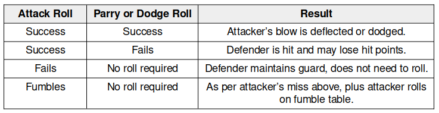

Réflexions sur le système d100 de BRP
Réflexions sur le système d100 de BRP#
Ressources#
- SRD du Basic Role Playing system de Chaosium, ainsi que vers sa licence ORC.
- Divers handouts pour BRP v5.
- Page des moteurs de jeux de rôle génériques.
Introduction#
BRP n'est pas un système aussi simple qu'il en a l'air. Des choix de conception le distinguent fondamentalement de D&D. Sans émettre de jugement de valeur, il est souvent plus difficile dans BRP de faire la même chose que dans D&D.
Structure du combat dans BRP v5#
Dans BRP, deux jets sont faits à chaque action : un jet pour l'Attaquant et un jet pour le Défenseur. Cette mécanique se retrouve dans de nombreux jeux et n'est pas la même que la mécanique de D&D basée sur un seul jet.

Table 1 : Extrait du SRD de BRP v5
Le combat est centré sur l'attaquant qui, s'il rate son jet de d100 sous sa compétence de combat, ne touche pas son adversaire. Nous avons la même chose dans D&D avec un échec de jet contre la Classe d'Armure (CA).
Mais quand l'attaque est réussie dans D&D, les dommages sont calculés, ce qui n'est pas le cas dans BRP, en raison du second jet, celui de la défense.
Dans BRP, l'adversaire a le choix de parer ou d'esquiver (voir tableau ci-dessus). Si la parade ou l'esquive fonctionne, alors c'est un échec pour l'attaquant.
J'écoutais dernièrement Jason Durall (photo ci-dessus) dire que BRP était un jeu "transparent" (ici) qui donnait les vraies chances de réussite. C'est vrai pour les compétences, mais pas entièrement vrai pour le combat, car un "succès" peut devenir facilement un échec.
| Attaquant | Défenseur (succès/échec) | % réel de réussite | CA émulée (*) |
|---|---|---|---|
| 25% | 25%/75% | 25% x 75% = 19% | 19 |
| 25% | 50%/50% | 25% x 50% = 13% | 20 |
| 25% | 75%/25% | 25% x 25% = 6% | 22 |
| 50% | 25%/75% | 50% x 75% = 38% | 15 |
| 50% | 50%/50% | 50% x 50% = 25% | 18 |
| 50% | 75%/25% | 50% x 25% = 13% | 20 |
| 75% | 25%/75% | 75% x 75% = 56% | 12 |
| 75% | 50%/50% | 75% x 50% = 38% | 15 |
| 75% | 75%/25% | 75% x 25% = 19% | 19 |
Table 2 : % réel de réussite en fonction des % d'attaque et de défense
Ce problème de probabilités est similaire à celui expliqué dans la page sur les combats avec un système D6.
Dans le cas de BRP, la probabilité de succès réel n'est pas la probabilité de succès de l'action.
Nous pouvons tenter d'émuler l'adversaire en mode CA d20 (voir colonne (*)) pour décortiquer un peu le mécanisme, preuve que ce dernier n'est pas complètement transparent.
Prenons un cas moyen de D&D : un PJ a +0 dans le Ability Bonus et il est de niveau 1 avec un Proficiency Bonus de +2. Le jet d'attaque est d20+2 (jet allant de 3 à 22).
| Jet | Probabilité % | Jet | Probabilité % |
|---|---|---|---|
| 3 | 100 | 13 | 50 |
| 4 | 95 | 14 | 45 |
| 5 | 90 | 15 | 40 |
| 6 | 85 | 16 | 35 |
| 7 | 80 | 17 | 30 |
| 8 | 75 | 18 | 25 |
| 9 | 70 | 19 | 20 |
| 10 | 65 | 20 | 15 |
| 11 | 60 | 21 | 10 |
| 12 | 55 | 22 | 5 |
Table 3 : Probabilité de toucher pour un PJ de base dans D&D expliquant la CA émulée
Nous voyons que la CA émulée du Défenseur est relative.
| % du Défenseur | CA émulée avec attaquant 25%/50%/75% |
|---|---|
| 25 | 19/15/12 |
| 50 | 20/18/15 |
| 75 | 22/20/19 |
Table 4 : CA variable selon la force de l'attaquant
Cela signifie qu'un même adversaire est plus ou moins difficile à toucher selon la compétence de l'attaquant.
Ce choix de conception n'est pas le même que le choix de D&D, jeu dans lequel la CA de l'adversaire est absolue. Certes, le jet de dé de l'attaquant a plus ou moins de chances de réussir, mais la CA n'est pas variable en fonction de la puissance de l'attaquant.
En quelque sorte, vu du système D&D, le système BRP est celui de la double-peine :
- L'attaquant a un score peu élevé et donc moins de chances de toucher, dans l'absolu ;
- Mais en plus, ses chances de toucher sont diminuées par la force de l'attaquant.

Table 5 : Pourcentage réel de réussite dans BRP suivant la force de l'attaquant
En fait, le score d'attaque de BRP n'est que la limite théorique de la borne supérieure de la probabilité de succès de l'attaquant quand la probabilité de parer/esquiver du défenseur tend vers zéro.
C'est évidemment un choix de conception un peu "punitif" et moins épique que celui de D&D. cela veut dire aussi qu'un même adversaire ne représente pas la même difficulté (sous-entendu absolue) pour tous les PJs.
Cas des "special success" et des critiques#
Ce choix est par contre mené de manière cohérente dans le système. Par exemple, dans le cas des succès spéciaux et des critiques.

Table 6 : Table des succès spéciaux et des critiques
Dans BRP, les réussites critiques sont à 1/20 du score de la compétence, tout comme les échecs critiques (à 100% - 1/20 de la compétence). Les succès spéciaux sont à 1/5 du score de compétence.
Ce choix de conception implique que les chances de réussite critique ne sont pas constantes pour tous les PJs mais relatives à leur score de compétence.
L'approche de D&D est différente : un 1 est toujours un échec critique et un 20 naturel toujours une réussite critique, cela quelque soit les niveaux de compétences.
Encore une fois, BRP fait le choix de la relativité.
Notons que la difficulté et la facilité, dans BRP v5, sont traitées avec des bonus ou des malus de type : +50%/+20%/+0%/-20%/-50% qui sont, eux, des bonus et malus absolus.